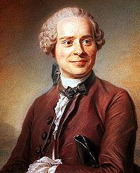
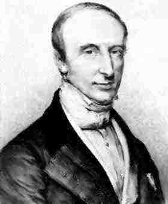
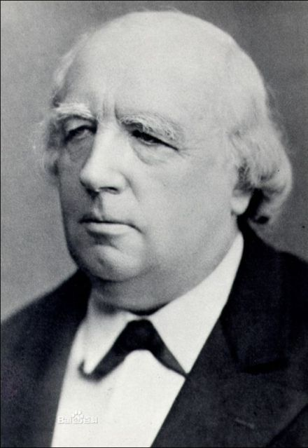

| 与无穷小量(Infinitesimal)发展有关的数学家 |
|---|
| 18世纪，欧陆数学家们力图以代数化的途径来克服微积分基础的困难，这方面的主要代表人物是达朗贝尔、欧拉和拉格朗日，直到十九世纪中叶，德国数学家魏尔斯特拉斯给出 了极限的严格化的定义。 |
达朗贝尔定性地给出了极限的定义，并将它作为微积分的基础， 他认为微分运算“仅仅在于从代数上确定我们已通过线段来表达的比的极限” ； 欧拉提出了关于无限小的不同阶零的理论； 拉格朗日也承认微积分可以在极限理论的基础上建立起来，但他主张用泰勒级数来定义导数,并由此给出我们现在所谓的拉格朗日中值定理。 欧拉和拉格朗日在分析中引入了形式化观点，而达朗贝尔的极限观点则为微积分的严格化提供了合理内核。 达朗贝尔(d’Alembert,1717-1783)，法国著名的物理学家、数学家和天文学家 |
| 微积分的严格化工作经过近一个世纪的尝试，到19世纪初已开始见成效。 首先是捷克数学家波尔察诺(B. Bolzano,1781-1848)1817年发表的论文《纯粹分析证明》，其中包含了函数连续性、导数 等概念的合适定义、有界实数集的确界存在性定理、序列收敛的条件及连续函数中值定理的证明等内容。但波尔察诺的 工作长期淹没无闻，没有引起数学家们的注意。 |
19世纪分析的严密性真正有影响的先驱则是伟大的法国数学家柯西。柯西关于分析基础的最具代表性的著作是他的《分析教程》(1821)、《无穷小计算教程》(1823)以及《微分计算教程》(1829)，它们以分析的严格化为目标，对微积分的一系列基本概念给出了明确的定义，在此基础上，柯西严格地表述并证明了微积分基本定理、中值定理等一系列重要定理，定义了级数的收敛性，研究了级数收敛的条件等，他的许多定义和论述已经非常接近于微积分的现代形式。 柯西的工作在一定程度上澄清了微积分基础问题上长期存在的混乱， 向分析的全面严格化迈出了关键的一步。 柯西的研究结果一开始就引起了科学界的很大轰动，就连柯西自己也认为他已经把分析的严格化进行到底了。然而，柯西的理论只能说是“比较严格”，不久人们便发现柯西的理论实际上也存在漏洞。比如柯西定义极限为：“当同一变量逐次所取的值无限趋向于一个固定的值，最终使它的值与该定值的差可以随意小，那么这个定值就称为所有其它值的极限”，其中“无限趋向于”、 “可以随意小”等语言只是极限概念的直觉的、定性的描述，缺乏定量的分析，这种语言在其它概念和结论中也多次出现。 另外，微积分计算是在实数领域中进行的，但到19世纪中叶，实数仍没有明确的定义，对实数系仍缺乏充分的理解，而在微积分的计算中，数学家们却依靠了假设：任何无理数都能用有理数来任意逼近。 柯西(A-L. Cauchy,1789-1857)，法国数学家 当时，还有一个普遍持有的错误观念就是认为凡是连续函数都是可微的。基于此， 柯西时代就不可能真正为微积分奠定牢固的基础。所有这些问题都摆在当时的数学家们面前。
|
为微积分的严密性做出卓越贡献的是德国数学家魏尔斯特拉斯，他曾在波恩大学学习法律和财政，后因转学数学而未完成博士工作，得到许可当了一名中学教员。魏尔斯特拉斯是一个有条理而又苦干的人，在中学教书的同时，他以惊人的毅力进行数学研究。由于他在数学上做出的突出成就，1864年他被聘为柏林大学教授。 魏尔斯特拉斯定量地给出了极限概念的定义。魏尔斯特拉斯用他创造的一套ε-δ语言重新定义了微积分中的一系列重要概念，特别地，他引进的一致收敛性概念消除了以往微积分中不断出现的各种异议和混乱。 魏尔斯特拉斯认为实数是全部分析的本源，要使分析严格化，就首先要使实数系本身严格化。而实数又可按照严密的推理归结为整数（有理数）。因此，分析的所有概念便可由整数导出。这就是魏尔斯特拉斯所倡导的“分析算术化”纲领。基于魏尔斯特拉斯在分析严格化方面的贡献，在数学史上，他获得了“现代分析之父”的称号。 1857年，魏尔斯特拉斯在课堂上给出了第一个严格的实数定义，但他没有发表。1872年，戴德金 (R. Dedekind, 1831-1916)、康托尔(B. Cantor,1829-1920)几乎同时发表了他们的实数理论，并用各自的实数定义严格地证明了实数系的完备性。这标志着由魏尔斯特拉斯倡导的分析算术化运动大致宣告完成。 魏尔斯特拉斯(W. Weierstrass,1815- 1897)，德国数学家 |
| 返回主页 上一页 下一页 |